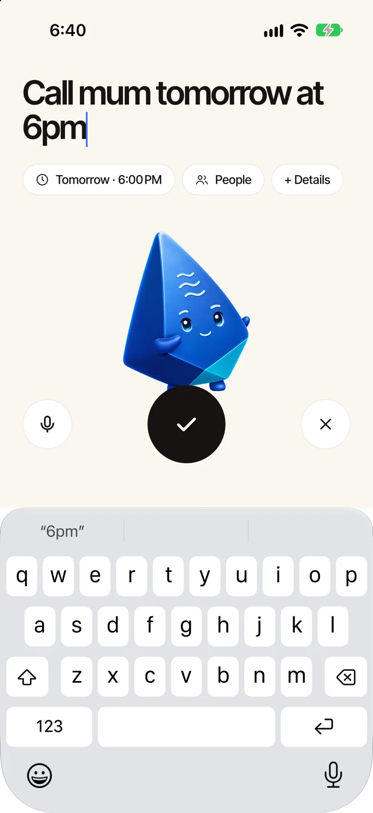
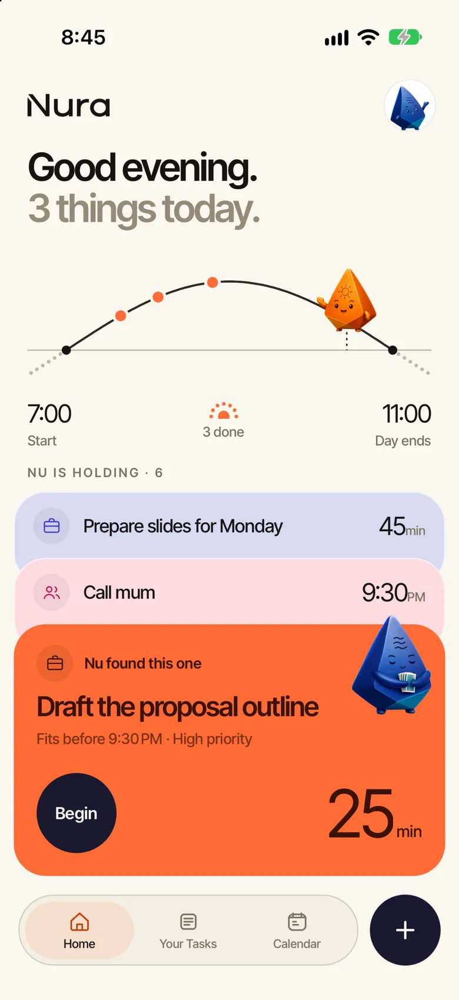
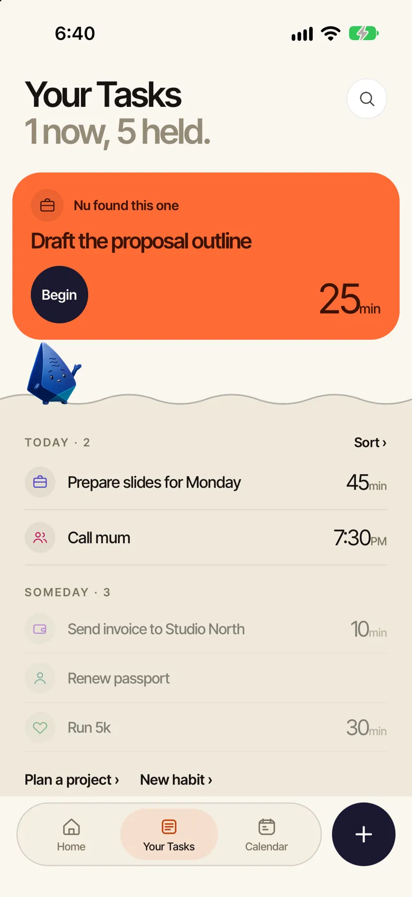
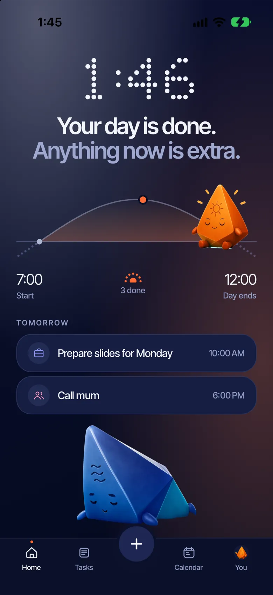

A tour of Nura, screen by screen.
These are the real screens, from the app as it is today.
Say it however it comes.
- Type and talk at once. Start speaking, switch to typing mid-sentence.
- Nu reads it. When, who and how long appear as chips you can change.
- Several things at once become separate tasks; a goal too big for one becomes a project.

Your day, held for you.
- The day's path. Ra crosses it as the day goes on; coral dots mark what got done.
- Nu is holding the rest as a small stack, not a list to scan.
- The one Nu found sits in front. Begin, or tap another to bring it forward.

Everything sinks. One thing rises.
- Above the water: the one to do now.
- Below it: today, this week, projects, someday. Deeper the later they are.
- Nothing is hidden, just held until it's needed.

A path, not a pile.
Tell Nu a goal. It asks one question and lays out a short path you can edit. Only the current move reaches your day.
- Too big? Nu makes the move smaller.
- Blocked? Nu finds a way around it.
- Your edits stay. When Nu replans, what you wrote is kept as you wrote it.
- Pull last year's numbersMon
- Draft the three tiersTue
- Send the tiers to financeNow
- Update the comparison tableThen
- Publish the pageLater
One move, handed over.
- Nu hands it to Ra. The task, about how long, and Begin. Nothing else.
- More options, when you want them: length, energy, break it down, remind me, waiting on someone.
Ra walks the ring. You do the thing.
- Leave it running. It waits in a small pill above the tabs.
- Stop here, it still counts. The task stays open for next time.
- A thought just arrived? Hand it to Nu without leaving.
You did it together.
Ra holds up the pebble: the thing you just finished. The next one is there if you want it, or a short break, or nothing at all.
A month of suns.
- A sun for every day you got something done, bigger the more you did.
- A quiet day is an empty circle. Never a gap, never a warning.
- Tap a day for its flow, your calendar's events included. Add something you did that never made a list.

It learns how you work.
Your good hours, how long things really take, what keeps slipping. Nura suggests with the reason attached, and learns from what you say yes to.

You tend to get things done around 10 AM. Put “Prepare slides for Monday” there?
Welcome back. No catching up needed, just one small thing, like “Send invoice to Studio North”?
Your day is done. Anything now is extra.
Nura is light while your day runs and turns dark once it ends. You choose when that is. After that it only shows tomorrow.
